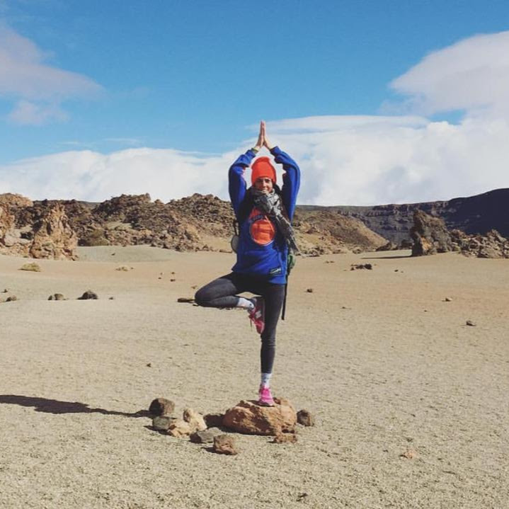

My Journey
-

Early days
Dancing
I have a background in dancing. Back in my home country Argentina, I studied dance for several years and I always understood the body as a way of expressing myself, being creative and connecting with others.
-
March 2007
First steps
It wasn’t until my mid-twenties, while I was living in Barcelona, that I attended my first Hatha Yoga class and felt completely revitalised and a deep sense of inner peace. Since then, I've been practicing different styles, loving each and one of them and learning something new each time I got onto my mat. I started to realise that the study of asanas is about using a posture to understand and transform yourself; and discovered that through yoga, I became a stronger, healthier and happier version of myself. When I first attended a Vinyasa Flow Yoga class, I fell in love with every aspect of it such as the linking of body movement with breath, the smoothly flowing movements- which I found almost dance-like, and the possibility to cultivate my inner creativity. So I became passionate about it.
-
2013
Kids Yoga
In 2013 I completed the Yoga for Kids and Families teacher training with Rainbow Kids Yoga, where I was given the tools to transmit my love for this ancient tradition to the little ones.
-

July 2014
Phase Two Expansion
In 2014 I completed the 200 hrs Yoga Teacher Training with Sarah Woolridge at Pure Health and I´ve been teaching adults since then. In addition, I completed the Prenatal Yoga Teacher training at Pure Health with Sarah Woolridge and Christine Walti in May 2015, and I continue attending workshops and exploring other styles and teachers whenever I have an opportunity.
-